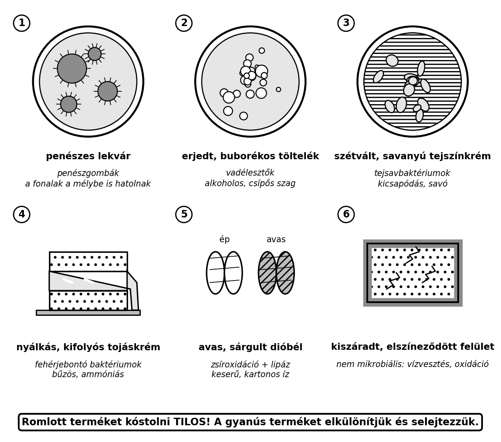

A cukrászüzemben naponta két irányba is figyelnünk kell a mikrobákra. Egyrészt hasznos partnereink: az élesztő megkeleszti a tésztát, a tejsavbaktériumok savanyított tejterméket adnak a krémekhez. Másrészt ugyanezek a csoportok – és a káros baktériumok, penészek – elronthatják a terméket, sőt meg is betegíthetik a vendéget. Ennek az alfejezetnek a célja, hogy a Mikroorganizmusok: csoportok, életfeltételek és szaporodás alfejezetben tanult alapokra építve a tanuló meg tudja különböztetni a hasznos és a káros mikrobatevékenységet, és felismerje a cukrászati termékek jellegzetes romlási jeleit.
Képzeljünk el egy nyári szombat reggelt. A műhelyben megkelt a briós tésztája: az élesztő dolgozott. A hűtőben friss tejföl és túró áll készen a krémeshez: bennük tejsavbaktériumok alakították ki az állagot és a savanykás ízt. Ez a mikrobiális munka kívánatos, technológiai segítség.
Ugyanekkor az előző nap készült gyümölcskrém tetején buborékok jelennek meg, savanyú, alkoholos szag árad belőle. A lekvár felületén zöldesfehér penészfolt. A hűtőben egy tejszínes sütemény már nyúlós, keserű. Ha ezt a vendég elé adjuk, panasz, kidobás, sőt élelmiszerbiztonsági ügy lesz. A két oldal közötti különbséget pontosan értenünk kell.
Definíció. Hasznos mikrobatevékenységnek nevezzük azokat az irányított, ellenőrzött folyamatokat, amelyekben a mikroorganizmusok által termelt szén-dioxid, tejsav, aroma és állagjavító anyagok a cukrászati termék minőségét javítják.
A cukrászatban leggyakrabban a következő hasznos mikrobákkal dolgozunk:
Miért? A hasznos mikrobák mindig szelektált, ellenőrzött törzsek, és a folyamat körülményeit (hőmérséklet, idő, tápanyag, higiénia) szabályozzuk. Ha a körülmények elromlanak, ugyanaz a mikrobasejt is káros irányba fordulhat: az élesztő túlérleli a tésztát, a tejsavbaktérium túlsavasít.
Megjegyzés. Az „élesztő” szó a mindennapi gyakorlatban a sütőélesztőt jelenti, de az élelmiszer-mikrobiológiában az élesztők nagy csoportja számos vad, romlást okozó fajt is tartalmaz. A sütőélesztő tehát a hasznos faj, a vadélesztők pedig szennyezőként romlást okozhatnak.
Definíció. Káros mikrobatevékenységről beszélünk, ha a mikroorganizmus jelenléte vagy anyagcseréje rontja a termék érzékszervi tulajdonságait, csökkenti az eltarthatóságát, vagy az ember egészségét veszélyezteti.
A káros mikrobák a termékbe szennyeződés útján kerülnek. A szennyeződés lehet:
Definíció. Keresztszennyeződés: egy nyersanyagból, személyből, eszközből vagy felületről a kórokozó vagy romlást okozó mikroba átkerül egy késztermékbe, amelyet utána nem hőkezelnek, vagy nem tartósítanak megfelelően.
A keresztszennyeződés tipikus cukrászati útja:
Figyelem. A keresztszennyeződés nemcsak mikrobiális, hanem kémiai és allergén jellegű is lehet. Ez utóbbiakat az allergénkezelés fejezetben (Allergének és intoleranciák: tájékoztatás és allergénkezelés a cukrászüzemben) részletezzük, de a műveletszervezés logikája azonos: nyers és kész, tiszta és szennyezett anyag nem találkozhat.
Definíció. Élelmiszerromlás: a mikrobák vagy a saját enzimek, illetve kémiai folyamatok hatására a termék érzékszervileg és élelmiszerbiztonsági szempontból élvezhetetlenné, emberi fogyasztásra alkalmatlanná válik.
A cukrászati romlás leggyakoribb mikrobiológiai formái:

A sematikus rajzok a leggyakoribb romlási képeket mutatják: penésztelepek a lekvár felületén (1), buborékos, erjedt gyümölcstöltelék (2), csomósan kicsapódott, savós tejszínkrém (3), nyálkás, kifolyós tojáskrém (4), az ép dióbélnél sötétebb, sárgult avas dióbél (5), és a kiszáradt, elszíneződött, repedezett szeletfelület (6), amely nem mikrobiális eredetű. A szag (alkoholos, savanyú, bűzös, kartonos) a képen nem látszik, de a felismerés része; romlott terméket kóstolni tilos.
| Romlási forma | Jellemző mikroba | Cukrászati példa | Felismerhető jel | Fő megelőzés |
|---|---|---|---|---|
| Erjedés | vadélesztők | gyümölcstöltelék, lekvár | buborék, alkoholszag, csípős íz | hűtés, alacsonyabb pH, cukorkoncentráció növelése |
| Savanyodás | tejsavbaktériumok | tejszínes krém, túrókrém | savanyú íz, kicsapódás, csípősség | hűtés, gyors fogyasztás, savasság |
| Penészedés | penészgombák | lekvár felülete, mézes tészta | látható penészgyep, dohos szag | száraz, zárt tárolás, légtér zárása |
| Rothadás | fehérjebontó baktériumok | tojáskrém, tejes töltelék | bűzös, ammóniás szag, kifolyós állag | hőkezelés, hűtés, higiénia |
| Avasodás | lipáztermelő mikrobák + kémiai oxidáció | diós, vajas, mákos termékek | keserű, kartonos íz, sárgulás | fény- és oxigénmentes, hűvös tárolás |
A mikrobák akkor szaporodnak, ha van tápanyag, víz, megfelelő hőmérséklet, pH és idő.
Szabály. A hűtési lánc megszakítása – például a krémes sütemény kirakatban szobahőmérsékleten tartása – a mikrobaszaporodás fő veszélye. Minél tovább van a termék a veszélyes zónában (a könyv tanulási értéke kb. 5–63 °C; hűtött tárolás 0–5 °C, melegen tartás 63 °C fölött; ellenőrizendő: hatályos NÉBIH-útmutató/Magyar Élelmiszerkönyv), annál nagyobb a romlási és ételmérgezési kockázat.
Jogszabály. Az élelmiszer-vállalkozónak – így a cukrász üzemeltetőjének – minden szakaszban biztosítania kell, hogy az élelmiszer ne szennyeződjék, ne fertőződjék, és a higiéniai alapelveknek megfelelően kezeljék. A részletes követelmények a 852/2004/EK rendeletben, a magyar élelmiszerlánc-törvényben és a NÉBIH jó higiéniai gyakorlat útmutatóiban találhatók (ellenőrizendő: hatályos jogszabályok és útmutatók pontos megnevezése). A mikrobiológiai kritériumokat a 2073/2005/EK rendelet rendezi (ellenőrizendő: hatályos szöveg és határértékek).
A cukrászatban a nyomonkövethetőség azért is fontos, hogy ha egy nyersanyag vagy késztermék mikrobiológiailag kifogásolható, vissza lehessen követni a beszállítót és a felhasznált tételeket.
Valós eset. Egy képzelt cukrászműhelyben nyáron a következő nap történik:
Egy kisvárosi cukrászda reggel elkészíti a hétvégi gyümölcsös krémeshez a friss gyümölcstölteléket. A gyümölcsöt megmossák, de az egyik edényt korábban tojásos krémhez használták, és csak felületesen öblítik el – ez Salmonella-keresztszennyeződés veszélyét hordozza. A tölteléket a meleg konyhában, lefedés nélkül hagyják 3 órán át, mire betöltik. Délután a hűtőpultban a tejszínes sütemények mellett a krémesdobozok ferdén állnak, a fedő lecsúszik. A zárás előtt a tulajdonos észreveszi: a gyümölcstöltelék tetején apró buborékok jelentek meg, savanyú gyümölcsbor illat terjeng, a krém pedig keserű, nyúlós.
Mi történt?
A tanulság: a romlás ritkán egyetlen hiba, hanem több egymást erősítő szennyeződési és hőmérsékleti hiba láncolata. A megelőzés a higiéniai munkakezdés, a mise en place (minden eszköz tiszta), a hőmérséklet-ellenőrzés és a romlási jelek korai felismerése.
Az eladótérben és a raktárban a cukrásznak naponta, de legalább minden kiadás előtt érzékszervi gyorsvizsgálatot kell végeznie:
Szabály. Ha a terméken a romlás bármely jele látható vagy érezhető, a terméket ki kell vonni a forgalomból, és meg kell semmisíteni. A penészes, erjedt, savanyú, rothadt készítményt nem elég „helyrehozni”, mert a mikrobiális anyagcsere-termékek a termék belsejében is jelen lehetnek.
Hiba 1. A gyümölcstöltelék erjed. - Tünet: buborékos, alkoholszagú, savanyú gyümölcspép. - Ok: vadélesztő a mosatlan gyümölcsről vagy szennyezett edényből; meleg, lefedetlen tárolás. - Megelőzés/javítás: azonnal kidobás; a gyümölcsöt alaposan megmossuk, az edényt fertőtlenítve használjuk, a tölteléket gyorsan lehűtjük és hűtőben tároljuk.
Hiba 2. A tejszínes krém keserű, nyúlós lesz. - Tünet: összefolyó, keserű, kellemetlen szagú krém. - Ok: fehérjebontó baktériumok a szennyezett habzsákból vagy a nem megfelelő hőmérsékleten tartott krémből. - Megelőzés/javítás: a termék nem menthető; a habzsákot minden használat után mosogatni és szárítani kell; a krémet hűtve (0–5 °C között), rövid ideig szabad tartani.
Hiba 3. A lekvár tetején penész, de a dolgozó „leszedi”, mert a többi „még jó”. - Tünet: a penészfolt alatt a lekvár felülete elszíneződött, a szaga dohos. - Ok: penészgombák mélyen hatolnak, mikotoxinok termelődhetnek. - Megelőzés/javítás: Tilos. A penészes lekvárt ki kell dobni. A dobozt mindig tiszta kanállal, jól zárva kell tartani, hűvös helyen.
1. feladat (A)
Nevezd meg, hogy a felsorolt mikrobák közül melyik hasznos és melyik
káros (romlást okozó) a cukrászatban: sütőélesztő, Penicillium
roqueforti (irányított sajtpenész), vadélesztő a gyümölcsben,
Pseudomonas a tejszínkrémben.
2. feladat (A)
Egy cukrászda a penészes tetejű lekvárt kinyitja, a penészt leszedi, és
az alatta lévő réteget felhasználja. Ismertesd, miért veszélyes ez a
gyakorlat jogszabályi és élelmiszerbiztonsági szempontból!
3. feladat (B)
Egy tejszínes krém szobahőmérsékleten 25 °C-on 2 óra alatt duplázza meg
a romlást okozó baktériumok számát (szemléltető példa, nem hatósági
adat). Hűtőben 5 °C-on 8 óra a duplázódási idő. Számítsd ki, hányszoros
lesz a baktériumszám-növekedés 8 óra alatt a két hőmérsékleten! Mit
jelent ez a hűtés szükségességére nézve?
4. feladat (B)
Egy cukrászmester azt gyanítja, hogy a gyümölcstöltelék romlása
keresztszennyeződésből indult ki. Sorold fel azokat az eszközöket,
felületeket, nyersanyagokat és munkafázisokat, amelyeket ellenőrizni
kell a 852/2004/EK rendelettel összhangban!
5. feladat (C)
Tervezz meg egy egyszerű megelőzési ellenőrzőlistát (5 pont) egy kis
cukrászüzem nyári reggeléhez, amely a hasznos és káros mikrobák
elkülönítését szolgálja! Indokold minden pontot!
6. feladat (D)
Végezz érzékszervi romlásvizsgálatot otthon vagy tanműhelyben: válassz
egy hűtőben tárolt krémes/gyümölcsös terméket, és tölts ki egy egyszerű
táblázatot (megjelenés, szag, íz, állag). Döntsd el, alkalmas-e
fogyasztásra! Romlás jeleit mutató vagy romlásgyanús terméket soha ne
kóstolj meg; az ízvizsgálat csak érzékszervileg kifogástalan, lejárati
időn belüli terméken, oktatói engedéllyel végezhető. Ha a megjelenés
vagy a szag romlásra utal, a vizsgálat ott véget ér: a termék
selejt.
Önellenőrzés – válaszok
1. feladat megoldása
- Sütőélesztő: hasznos (kelesztés). - Penicillium roqueforti:
hasznos, irányított sajtpenész. - Vadélesztő: káros, erjesztő romlást
okoz. - Pseudomonas: káros, fehérjebontó rothasztó
baktérium.
2. feladat megoldása
A penész látható része csak a felszíni telepek, de a fonalak mélyen a
lekvárba hatolhatnak. Egyes penészek mikotoxinokat termelnek, amelyek
hőállóak lehetnek. A termék „megmentése” a fogyasztó egészségét
veszélyezteti, és megsérti az élelmiszerbiztonsági követelményeket
(178/2002/EK, 852/2004/EK rendeletek szelleme, ellenőrizendő: konkrét
szakasz). A teljes terméket ki kell dobni, az edényt fertőtleníteni
kell.
3. feladat megoldása
- Képlet:
,
ahol generációszám
.
- 25 °C-on 8 óra alatt:
generáció,
-szoros
növekedés. - 5 °C-on 8 óra alatt:
generáció,
-szeres
növekedés. - Tehát hűtve 8 óra alatt 2-szeres, szobahőmérsékleten
16-szoros. A hűtés 8-szoros különbséget mutat; ezért a krémes terméket
mindig hűtve kell tartani. (Szemléltető számítás, a duplázódási idő
értékei nem hatósági adatok.)
4. feladat megoldása
- Nyers gyümölcs mosásának ellenőrzése. - A felhasznált edények,
keverőeszközök, habzsákok fertőtlenítettsége. - A munkafelület és a
hűtőpolc tisztasága. - A dolgozó kézmosása, munkaruhája. - A
gyümölcstöltelék hőmérséklete és a tárolási idő. - A nyers és kész
anyagok elkülönítése.
Mindezt a 852/2004/EK rendelet szerinti helyes higiéniai gyakorlat keretében dokumentálni is kell (ellenőrizendő: az üzem HACCP dokumentációjának pontos tartalma).
5. feladat megoldása
Például: 1. Reggel: kézmosás, tiszta munkaruha, hajháló – megelőzi az
emberi szennyezést. 2. Eszközök fertőtlenítése, a habzsákok szárítása –
megelőzi a keresztszennyeződést. 3. A gyümölcs, tojás és tejtermékek
hűtőből csak közvetlen felhasználás előtt kivétele, vagy hűtve tárolása
– lassítja a mikrobaszaporodást. 4. Az élesztős tészta és a nyers tojás
feltörésének helye (tojásfeltörő hely) elkülönítése – a nyers
szennyezést nem viszi a késztermékre. 5. A kész krémek azonnali
lehűtése, címkézése, tárolási hőmérséklet ellenőrzése – a romlást
gyorsan felismeri.
6. feladat megoldása
A gyakorlati feladatot a megadott szempontok szerint kell elvégezni. A
várt táblázat például:
| Szempont | Megfigyelés | Értékelés |
|---|---|---|
| Megjelenés | buborékos, penészes | romlott |
| Szag | savanyú, alkoholos | romlott |
| Íz | nem vizsgáltuk (romlásgyanú) | selejt |
| Állag | nyúlós, kifolyós | romlott |
Ha bármelyik jelet észleltük, a terméket ki kell dobni.
A cukrászüzemben a mikrobák egy része hasznos: a sütőélesztő keleszt, a tejsavbaktériumok savanyított tejterméket adnak, az irányított sajtpenészek ízesítenek. A káros mikrobák szennyeződéssel (nyersanyag, ember, eszköz, levegő, kártevő) kerülnek a termékbe, és keresztszennyeződéssel jutnak a késztermékhez. A romlás fő típusai: erjedés (vadélesztő), savanyodás, penészedés, rothadás (fehérjebontó baktériumok) és avasodás. A penészes, erjedt, nyúlós terméket tilos „megmenteni”, mindig ki kell dobni. A romlás sebessége a vízaktivitástól, pH-tól, hőmérséklettől és időtől függ; a hűtés lassít, de nem pusztít el. A helyes higiéniai gyakorlat és a HACCP-szemléletű ellenőrzés (HACCP a cukrászatban: CCP-k, hőmérsékletnapló és helyesbítő tevékenység) a romlás és a keresztszennyeződés megelőzésének alapja. Ez a tudás közvetlenül továbbvisz az Élelmiszer eredetű megbetegedések: ételmérgezés és ételfertőzés tárgyalásához, ahol a kórokozók egészségi hatását részletezzük.